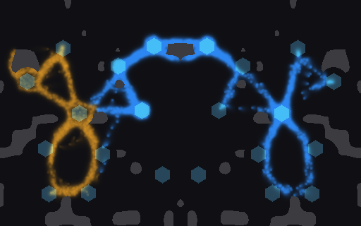
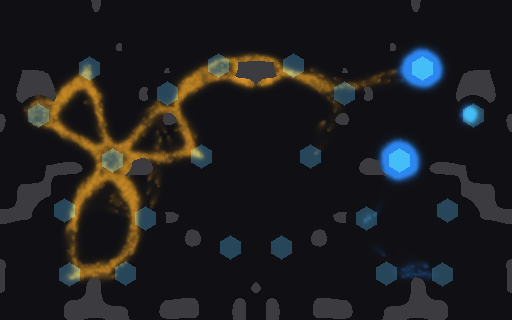
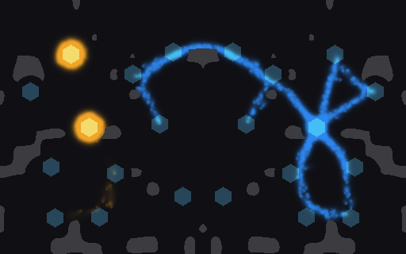
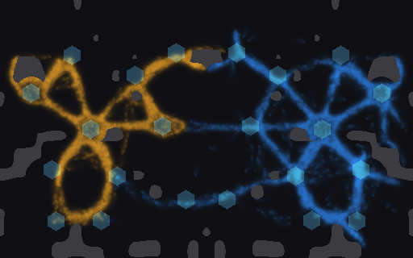

<title>Mould Body Forms</title>
<meta name="claude:viewport-fit-sides" content="cover">
<link rel="stylesheet" href="https://fonts.googleapis.com/css2?family=Space+Grotesk:wght@500;700&family=Inter:wght@400;600&family=JetBrains+Mono:wght@400&display=swap">
<style>
/* Layout: one reading column; pictures in a two-up grid, counts under each */
:root {
  --bg: #f5f6f3; --fg: #1d211d; --muted: #5d665e; --line: #d5dad3; --panel: #ffffff;
  --orange: #c9851c; --blue: #2b78d8;
  --display: "Space Grotesk", "Helvetica Neue", Arial, sans-serif;
  --body: "Inter", "Helvetica Neue", Arial, sans-serif;
  --mono: "JetBrains Mono", ui-monospace, Menlo, monospace;
}
@media (prefers-color-scheme: dark) { :root:not([data-theme="light"]) {
  --bg: #121512; --fg: #e4e8e2; --muted: #9aa49b; --line: #2d332d; --panel: #1a1e1a;
  --orange: #e7a443; --blue: #5aa0f2; color-scheme: dark } }
:root[data-theme="dark"] {
  --bg: #121512; --fg: #e4e8e2; --muted: #9aa49b; --line: #2d332d; --panel: #1a1e1a;
  --orange: #e7a443; --blue: #5aa0f2; color-scheme: dark }
body { background: var(--bg); color: var(--fg); font: 15px/1.55 var(--body);
  padding-left: max(16px, env(safe-area-inset-left, 0px)); padding-right: max(16px, env(safe-area-inset-right, 0px)); padding-block: 28px 48px; }
main { max-width: 880px; margin: 0 auto; display: grid; gap: 28px; }
h1 { font: 700 30px/1.15 var(--display); margin: 0; text-wrap: balance; }
h2 { font: 700 19px/1.25 var(--display); margin: 0 0 8px; text-wrap: balance; }
p { margin: 0; max-width: 68ch; }
.lead { font-size: 16.5px; }
.muted { color: var(--muted); font-size: 13.5px; }
.wrap { overflow-x: auto; }
table { border-collapse: collapse; width: 100%; font-variant-numeric: tabular-nums; font-size: 14px; }
th, td { text-align: left; padding: 7px 10px; border-bottom: 1px solid var(--line); white-space: nowrap; }
th { font-weight: 600; color: var(--muted); font-size: 12.5px; letter-spacing: .03em; text-transform: uppercase; }
td.win { font-weight: 600; }
.grid { display: grid; grid-template-columns: repeat(auto-fit, minmax(300px, 1fr)); gap: 18px; }
figure { margin: 0; background: var(--panel); border: 1px solid var(--line); border-radius: 6px; padding: 10px; display: grid; gap: 8px; min-width: 0; }
figure img { width: 100%; height: auto; border-radius: 3px; image-rendering: pixelated; }
figcaption { font-size: 13.5px; display: grid; gap: 2px; }
.k { font-family: var(--mono); font-size: 12.5px; color: var(--muted); }
.o { color: var(--orange); font-weight: 600; } .b { color: var(--blue); font-weight: 600; }
a { color: var(--blue); }
section { display: grid; gap: 10px; }
</style>
<main>
  <header style="display:grid;gap:10px">
    <h1>Mould body forms: who eats, who wins the fight</h1>
    <p class="lead">Two moulds with different settings grow from mirrored home crystals on the race world and convert each other where one outweighs the other. No soldiers. The fast network <b>eats more</b>, while the slow, dense forms <b>win where they touch</b>. That trade is what a gardener could play with. Proposal: <a href="https://claude.ai/artifact/LBDQgb8x9RoH6bE11G8H3m">Your own mould</a>.</p>
    <p class="muted">Forms: net (today's race mould), hunk (crawling droplets), scout (explorers), heavy (3× deposit, half the step). Conversion counts walkers' presence, not trail laid. 3 game minutes, each pairing played from both sides.</p>
  </header>

  <section>
    <h2>Who eats more (16 seeds)</h2>
    <p class="muted">A's share of the crystal charge both moulds ate. A wins a seed above 0.5. Only one pairing is significant after correction.</p>
    <div class="wrap"><table>
      <tr><th>A vs B</th><th>A ahead</th><th>p</th><th>Median share</th><th>Walkers at 3:00</th></tr>
      <tr><td>net vs hunk</td><td class="win">14 of 16</td><td class="win">0.004</td><td>0.570</td><td>4,324 / 1,345</td></tr>
      <tr><td>net vs scout</td><td>11 of 16</td><td>0.21</td><td>0.598</td><td>4,635 / 4,209</td></tr>
      <tr><td>net vs heavy</td><td>7 of 16</td><td>0.80</td><td>0.485</td><td>3,101 / 3,661</td></tr>
      <tr><td>hunk vs scout</td><td>5 of 16</td><td>0.21</td><td>0.457</td><td>1,400 / 3,914</td></tr>
      <tr><td>hunk vs heavy</td><td>6 of 16</td><td>0.45</td><td>0.471</td><td>1,296 / 2,036</td></tr>
      <tr><td>scout vs heavy</td><td>4 of 16</td><td>0.08</td><td>0.455</td><td>2,460 / 3,549</td></tr>
    </table></div>
  </section>

  <section>
    <h2>Who wins where they touch (8 seeds)</h2>
    <p class="muted">A seed goes to the side more walkers changed over to. Seeds where the bodies never met are left out.</p>
    <div class="wrap"><table>
      <tr><th>A vs B</th><th>Contact won A / B</th><th>Turned to A / B, a game</th></tr>
      <tr><td>net vs heavy</td><td>0 / <span class="win">7</span></td><td>673 / 2,048</td></tr>
      <tr><td>net vs hunk</td><td>0 / <span class="win">7</span></td><td>36 / 399</td></tr>
      <tr><td>hunk vs heavy</td><td><span class="win">5</span> / 1</td><td>110 / 6</td></tr>
    </table></div>
  </section>

  <section>
    <h2>Seed 5 at 3:00</h2>
    <p class="muted"><span class="o">Orange</span> is A, started on the left. <span class="b">Blue</span> is B, started on the right. Hexagons are crystals, grey is rock.</p>
    <div class="grid">
      <figure>
        <figcaption><span><span class="o">net</span> vs <span class="b">heavy</span></span><span class="k">walkers 2,753 / 3,487 · crystals held 3 / 5 · turned to 996 / 1,909</span></figcaption></figure>
      <figure>
        <figcaption><span><span class="o">net</span> vs <span class="b">hunk</span></span><span class="k">walkers 3,749 / 1,538 · crystals held 6 / 3 · turned to 1 / 362</span></figcaption></figure>
      <figure>
        <figcaption><span><span class="o">hunk</span> vs <span class="b">heavy</span></span><span class="k">walkers 1,377 / 1,225 · crystals held 2 / 3 · turned to 115 / 8</span></figcaption></figure>
      <figure>
        <figcaption><span><span class="o">net</span> vs <span class="b">scout</span></span><span class="k">walkers 4,403 / 4,321 · crystals held 5 / 7 · turned to 1,132 / 1,017</span></figcaption></figure>
    </div>
    <p class="muted">The same pairings at 1:00 and 2:00 are in the repo, <span class="k">Reports/player-mould-2026-11-12/pics/</span>.</p>
  </section>

  <section>
    <h2>What it means</h2>
    <p>The forms aren't a rock-paper-scissors cycle. They split along two axes: spreading to eat, or bunching to fight. In the gardeners game, soldiers can push your mould either way. Roads spread it, and feeding and cutting bunch it. So the choice is a strategy, and the enemy's form tells you which way to lean.</p>
  </section>
</main>
